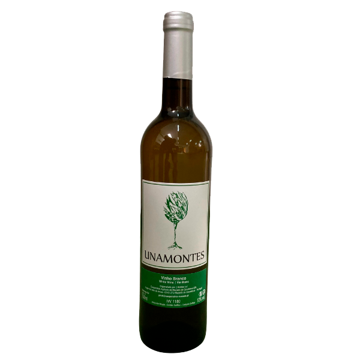
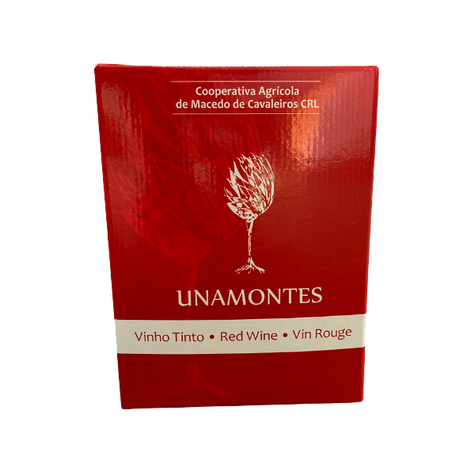

Wine
What's in it?
It is in our cellar that we produce the wine that we sell under the brand name Unamontes. Built in the sixties it has a capacity for transforming grapes that has shown to be effective and sufficient for the amounts of delivered grapes.Buy Unamontes White Wine 750MLIt is in our cellar that we produce the wine that we sell under the Unamontes brand.
Built in the 1960s, it has a capacity for transforming grapes that has proven to be
effective and sufficient for the quantities of grapes delivered by its members.
Vol. 12%
Buy Unamontes Red Wine Box 5L It is in our cellar that we produce the wine that we sell under the Unamontes brand.
Built in the 1960s, it has a capacity for transforming grapes that has proven to be
effective and sufficient for the quantities of grapes delivered by its members.
Vol. 12%